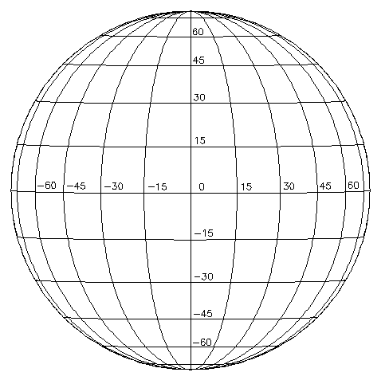
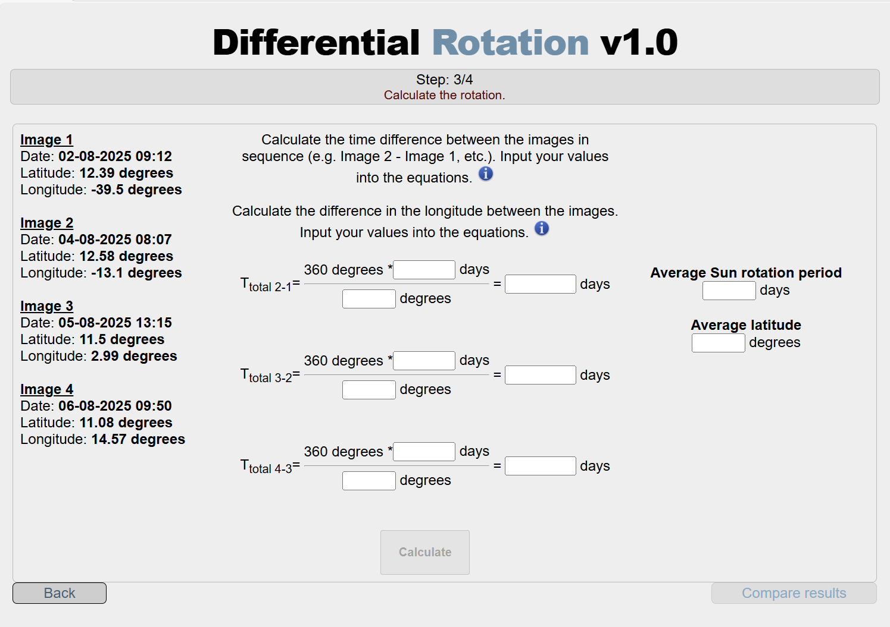

As 𝐦𝐚𝐧𝐜𝐡𝐚𝐬 𝐬𝐨𝐥𝐚𝐫𝐞𝐬 são regiões escuras do Sol onde o movimento granular da 𝐟𝐨𝐭𝐨𝐬𝐟𝐞𝐫𝐚 é inibido pela presença de campos magnéticos intensos associados ao movimento do plasma ao longo das linhas do 𝐜𝐚𝐦𝐩𝐨 𝐦𝐚𝐠𝐧é𝐭𝐢𝐜𝐨 𝐬𝐨𝐥𝐚𝐫.
Tal como acontece com uma bola de basquetebol, podemos descobrir quanto tempo o Sol demora a completar uma rotação, acompanhando a posição das 𝐦𝐚𝐧𝐜𝐡𝐚𝐬 𝐬𝐨𝐥𝐚𝐫𝐞𝐬 ao longo do tempo.
Assim, observando o 𝐦𝐨𝐯𝐢𝐦𝐞𝐧𝐭𝐨 𝐝𝐞 𝐮𝐦𝐚 𝐦𝐚𝐧𝐜𝐡𝐚 𝐬𝐨𝐥𝐚𝐫 na superfície do Sol, podemos estimar quanto tempo o Sol demora a dar uma volta completa sobre si próprio.
O tempo que um objeto demora a completar uma volta em torno do seu eixo chama-se 𝐩𝐞𝐫í𝐨𝐝𝐨 𝐝𝐞 𝐫𝐨𝐭𝐚çã𝐨.
ACTIVIDADE 1: CALCULA O PERÍODO DE ROTAÇÃO DO SOL
Nota: Clica em cada imagem do Sol para veres melhor as manchas solares.
| GRUPO 1 DE ESTUDANTES | GRUPO 2 DE ESTUDANTES | |||||||||||||||||
| FORMA DE REALIZAR A ACTIVIDADE | Repara como a mesma mancha se desloca entre as imagens. |
Repara como a mesma mancha se desloca entre as imagens. |
||||||||||||||||
| OBSERVATÓRIO | Telescópio solar PoET | Satélite SDO | ||||||||||||||||
| DADOS A UTILIZAR | Um conjunto de imagens na banda do visível. | Um conjunto de imagens na banda do visível. | ||||||||||||||||
|
CONJUNTO DE IMAGENS |
|
|
||||||||||||||||
|
MODO 1: MANUAL Usa la siguiente plantilla - impresa en acetato Usa o seguinte modelo — impresso em acetato. Coloca o modelo sobre as imagens do Sol e, para a mancha solar que escolheres em cada imagem, regista:
|
 |
|||||||||||||||||
|
CÁLCULO ENTRE IMAGEM 2 E IMAGEM 1
Calcula o período de rotação do Sol: T = [(t₂ − t₁) / (Θ₂ − Θ₁)] × 360°
|
|


{kind=link}
ACTIVIDADE 2: CALCULA O PERÍODO DE ROTAÇÃO COM ESTAS FERRAMENTAS WEB
| GRUPO 1 DE ESTUDANTES | GRUPO 2 DE ESTUDANTES | |
| FORMA DE REALIZAR A ACTIVIDADE | Repara como a mesma mancha se desloca entre as imagens. | Repara como a mesma mancha se desloca entre as imagens. |
| OBSERVATÓRIO | Telescópio solar PoET | Satélite SDO |
| DADOS A UTILIZAR | Um conjunto de imagens na banda do visível. | Um conjunto de imagens na banda do visível (SDO HMI). |
|
CONJUNTO DE IMAGENS (procurar as seguintes datas na aplicação) |
|
|
| MODO 2: FERRAMENTAS |
Applet ESA com acesso à Internet |
JHelioviewer instalado con acceso a Internet |
|
CÁLCULO: Completa os dados solicitados, calculando a diferença entre os valores de duas imagens consecutivas:
|
 |
PERGUNTAS:
- Que diferenças observam entre as imagens obtidas pelo telescópio solar PoET, a partir da Terra, e as imagens obtidas pelo satélite SDO?
- Qual é o período de rotação do Sol, tomando como referência a região ativa 14213 nas imagens NASA/SDO obtidas entre 09/09/2025 e 11/09/2025, utilizando o MÉTODO 1?
- Qual é o período de rotação do Sol para as imagens CESAR obtidas entre 2025.08.xx e 2025.08.yy?
(Pista: utiliza o deslocamento angular da mancha e o intervalo de tempo entre as imagens para calcular o tempo correspondente a 360°.)